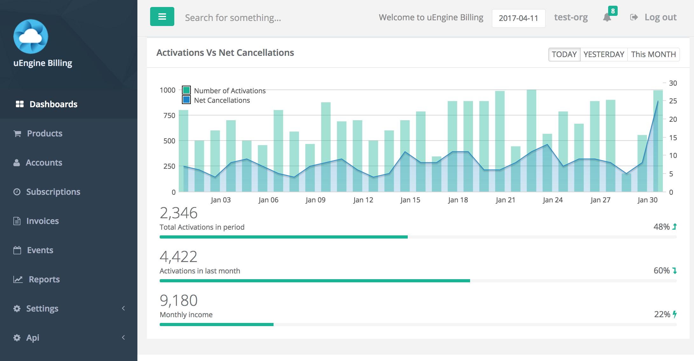

<section class="section-padding banner-6 dark-bg bg-fixed overlay light-4" data-stellar-background-ratio="0.5">
 <div class="container">
  <div class="row">
   <div class="col-md-7 light-grey-text">
    <h2 class="font-40 mb-30 white-text">Why UEngine Billing?</h2>

    <ul class="list-icon mb-30">
     <li><i class="material-icons">&#xE876;</i> 구독 비즈니스 마켓플레이스 운용.</li>
     <p>귀사의 메인 구독 비즈니스 모델은 물론, 귀사의 서비스를 사용하여 수익을 재창출하고자 하는 3th party 고객들로 하여금 자유로운 판매 전략을 수립하도록 할 수 있습니다.
     </p>
     <p>
      3th party 고객들과 수익의 일정부분을 나눠가지고, 그들이 고민해야 하는 보안, 사용량 집계, 통합인증, 결제 시나리오 등의 기술적 이슈들로부터 자유롭게 해 준다면
      그들은 귀사의 서비스에 더욱 쉽게 다가서고, 풍부한 컨텐츠를 만들어 낼 것입니다.
     </p>

     <p>유엔진 Billing 은 이를 위해 3th party 로 하여금 개별적인 판매 전략을 수립하고 고객유치를 해 나갈 수 있도록 도와드립니다.</p>

     <li><i class="material-icons">&#xE876;</i> CRM, Integration, Customizing.</li>
     <p>고객으로부터 결제를 받는 과정은 언제나 Happy case 일 수는 없습니다.</p>
     <p>고객이 구독 서비스를 가입하는 과정은 같지만, 구독을 거부하는 과정은 귀사의 고객센터를 통하지 않고 다양한 형태로 나타날 수 있습니다.
      고객의 카드 유효기간이 초과 될 수도 있고, 고객이 Payment Gateway 업체를 탈퇴해 버릴 수 있습니다.
      이러한 상황에 대비해 고객에게 서비스를 사용할 권한이 있는가 확인하는 절차와 고객에게 결제 재가를 요청하는 것은 중요한 문제입니다.</p>

     <p>
      위의 예시 이외에도, 유엔진 Billing 은 결제 진행 중 일어나는 다양한 Event 로부터 귀사가 보유한 업무 로직을 연동해 나가실 수 있습니다.
      고객 정보, 결제 이벤트, 인보이스, 미터링, 구독 변경 및 새로운 ADD-ON 의 추가를 비롯한 수많은 Case by Case 정보를 원하는대로 처리하고,
      필요한 경우 Admin api 를 통해 고객으로부터 추가금을 수령하거나, 환불, 크레딧 지불, 인보이스 수정및 재발송을 수행하도록 하십시오.
     </p>

     <p>
      또한, <a>유엔진 BPM</a> 을 통해 이미 준비되어있는 강력한 룰 엔진을 적용하실 수 있습니다.

      유엔진 Billing 은 다양한 언어의 API 클라이언트들을 제공합니다. <a>클라이언트 다운로드</a>
     </p>

     <li><i class="material-icons">&#xE876;</i> 클라우드 서비스에 최적화된 아키텍쳐.</li>
     <p>유엔진 Billing 은 클라우드에 최적화된 아키텍쳐로 디자인 되어 있습니다.
      <a>유엔진 IAM</a> 과 <a>유엔진 API Gateway</a> 로 관리와 보안이 보장되는 클라우드 빌링 시스템을 멀티 인스턴스 환경에서 유연하게 운용하실 수 있습니다.</p>

     <span> - Docker 제공</span><br>
     <span> - 멀티 인스턴스 & Safe Event Que</span><br>
     <span> - Oauth 2.0 토큰 기반 인증 [IAM]</span><br>
     <span> - Api gateway 및 커스텀 api 셀프 서비스 제공 [Api gateway]</span><br>
     <span> - 100% Rest full api</span><br>
     <span> - High 퍼포먼스, Low 리소스</span>

    </ul>

    <a href="#." class="btn btn-lg text-capitalize waves-effect waves-light">Contact Us (02-567-8301)</a>

   </div><!-- /.col-md-7 -->

   <div class="col-md-5 mt-sm-30">
    
    
    
    
   </div><!-- /.col-md-5 -->
  </div><!-- /.row -->
 </div><!-- /.container -->
</section>
